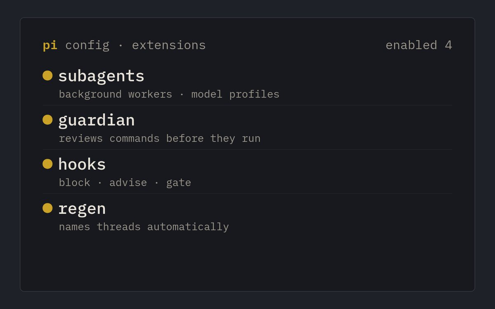
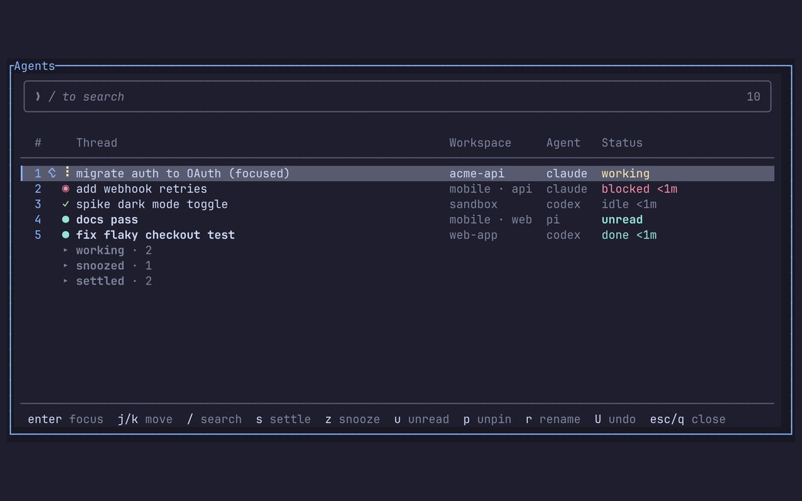
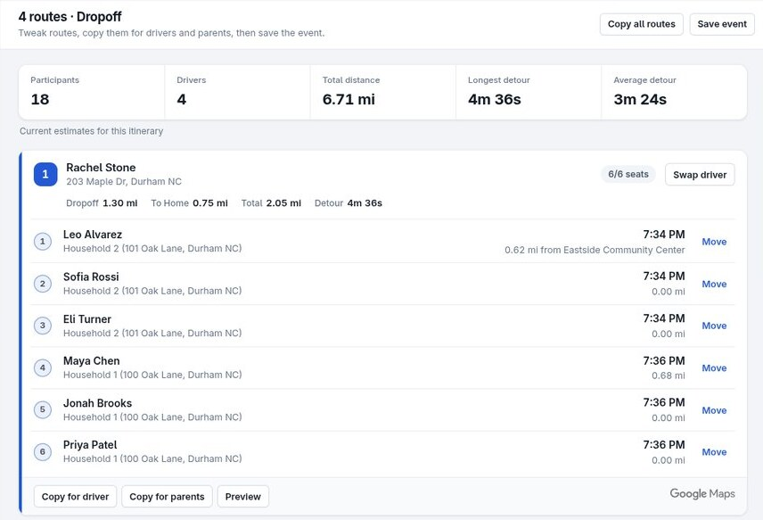

Aryan Binazir
Aryan BinazirApplied AI Engineer
Building production LLM agent systems in Go. I lead the team that owns agent context, including memory systems, semantic layers, context management, vector search, web search, and file upload, along with the evaluations for those systems.
Software engineer at the core. I came up building production backends and full-stack applications in Go, Python, and TypeScript, and that foundation shapes how I approach agents: as real systems that have to hold up in production.
Selected work

Pi Extensions
The extensions I run daily on the Pi coding agent: background subagents, a Guardian that reviews every command before it runs, and hooks that block, advise or gate the agent.

herdr-triage
Triage for running many coding agents at once: settle, snooze, mark unread or pin each thread, and resume any of them with the conversation intact.

Ride Home Router
Plans event pickups and dropoffs with its own routing solver: it assigns riders to drivers by capacity, keeps households together and balances every route. Google Maps only geocodes the addresses and measures the finished routes.
Built with a heavy emphasis on making the routing algorithms efficient and fast.
Triage
Routes poison-pill messages to a dead letter store and uses parallel consumers so one slow message never blocks the queue.